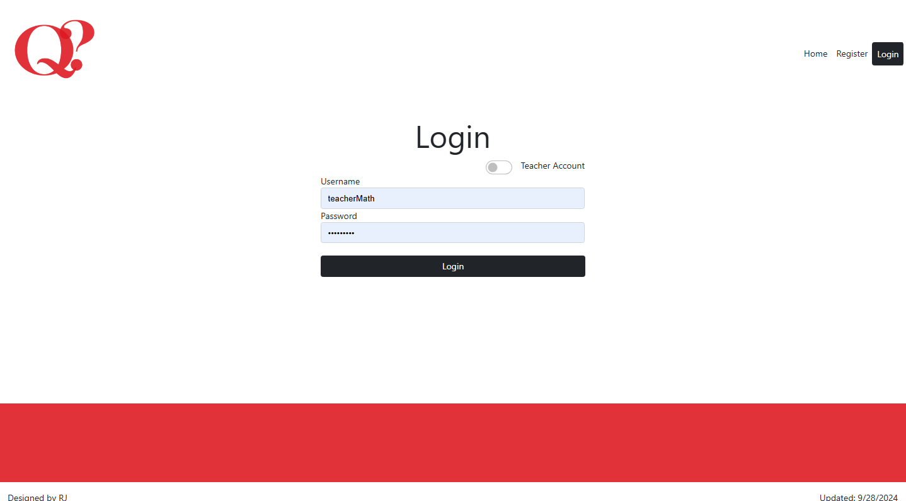

Implementation Approach

The general approach of the application was to use the following:
-
For the Frontend use Razor pages (CSHTML) for the UI. Additionally use Bootrap and CSS for styling the front end.
-
For the Backend I used C# with ASP.NET for business logic.
-
For the Database I used MySQL through Azure for data storage.
-
For web hosting I choose Azure cloud platform.
The main goal of this project was to follow industry standards as closely as possible. I wanted to create a safe way for users to log in and use a N-layer system to better protect and keep data safe. I would also use the Model-View-Controller (MVC) approach to manage the web application effectively. Additionally, a cloud platform would be used to help the project grow and adapt to future needs making it scaliable.